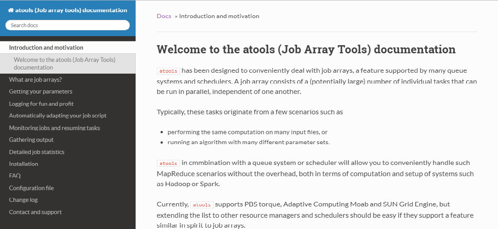

MkDocs
MkDocs complements Doxygen nicely, since it is very useful for tutorial-style documentation. The format is MarkDown, a very simple text mark-up format that is ubiquitous nowadays. It is used in many online tools such as blogging software, but also in development tools such as GitHub and Jupyter notebooks.
initialisation
Suppose we have a project in a directory my_project that has a source directory and some files. Initially, the directory looks like this.
my_project/
└── src
├── bye.c
├── hello.c
└── Makefile
When you want to start to document this project, you can set it up using MkDocs' new command, e.g.,
$ mkdocs new my_project
The directory will now look as follows:
my_project/
├── docs
│ └── index.md
├── mkdocs.yml
└── src
├── bye.c
├── hello.c
└── Makefile
A configuration file mkdocs.yml has been created, as well as a docs directory that will contain the MarkDown pages with the documentation, and an index.md file in that directory that serves as the entry point into your documentation.
Configuration file
The configuration file is in YAML format, and initially looks as follows:
site_name: My Docs
This will have to be customised to your requirements. The site name can be changed to, e.g., the name of your project. Several other meta-data items can be added, e.g.,
site_name: my_project documentation
site_description: this is a project that implements some brilliant software.
site_author: Geert Jan Bex
theme: readthedocs
You also have to specify where to create the documentation, e.g., in a subdirectory html_docs of my_project directory.
site_name: my_project documentation
site_description: this is a project that implements some brilliant software.
site_author: Geert Jan Bex
theme: readthedocs
site_dir: html_docs/worker
Lastly, you can specify the titles of the pages of your documentation, and the MarkDown files.
site_name: my_project documentation
site_description: this is a project that implements some brilliant software.
site_author: Geert Jan Bex
theme: readthedocs
site_dir: html_docs/worker
pages:
- Introduction and motivation: 'index.md'
- Step by step: 'steps.md'
Of course the index.md file should be edited, and the steps.md file created.
Documentation pages: MarkDown
Individual pages are written as MarkDown text. Below is an example for steps.md.
## High-level description
This project supports a workflow in several steps.
1. First you say hello,
1. then you say bye.
## Usage
There are two applications to achieve this, `hello` and `bye` respectively. You can call `hello` as
```bash
$ hello gjb
```
Here, `gjb` is the name of the person you want to say hello to.
_Caution:_ if you use a name that doesn't exists, you will get an error.
As you can see, it is almost a normal text, with some special annotation to define style elements. For instance,
* # Heading 1
* ## Heading 2
* ### Heading 3
* …
produce headings at various levels. Unordered lists can be created by using a two-spaced indentation, followed by * for each item, e.g.,
* First item
* Second item
Similarly, an ordered list can be created as follows,
1. First item
1. Second item
Note that the numbering is automatically done for you, so reordering items is no issue.
Text can have styles such as
* emphasized: _emphasized_
* bold: __bold__
* ~~strike-through~~: ~~strike-through~~
* code: code
Code snippets can be rendered with syntax highlighting as
```fortran
IF (a < b) THEN
a = a - b
END IF
```
Hyperlinks can be added as [text](url).
Incidentally, this text has been written in MarkDown as well.
Rendering documentation
Once you are done, you can build the documentation by executing
$ mkdocs build
A very nice feature of MkDocs is that it can offer a live preview of your work in progress, which will shorten your turn-around time while writing documentation. It contains a web server that runs locally, and that you can point your browser to.
$ mkdocs serve
INFO - Building documentation...
[I 180820 14:52:04 server:271] Serving on http://127.0.0.1:8000
[I 180820 14:52:04 handlers:58] Start watching changes
You can view the documentation by entering the URL http://127.0.0.1:8000 in your web browser. When you edit the documentation, the pages in your web browser are automatically updated.
The main page of MkDocs generated documentation for atools looks like this.
